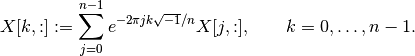

Discrete Transforms¶
The cvxopt.fftw module is an interface to the FFTW library and
contains routines for discrete Fourier, cosine, and sine transforms.
This module is optional, and only installed when the FFTW library is made
available during the CVXOPT installation.
Discrete Fourier Transform¶
-
cvxopt.fftw.dft(X)¶ Replaces the columns of a dense complex matrix with their discrete Fourier transforms: if
Xhas rows,
rows,
-
cvxopt.fftw.idft(X)¶ Replaces the columns of a dense complex matrix with their inverse discrete Fourier transforms: if
Xhas rows,![X[k,:] :=
\frac{1}{n} \sum_{j=0}^{n-1} e^{2\pi j k \sqrt{-1}/n} X[j,:],
\qquad k=0,\ldots,n-1.](_images/math/e1c7f0c9b12f842d6225770277576547e13dce69.png)
The module also includes a discrete N-dimensional Fourier transform. The input matrix is interpreted as an N-dimensional matrix stored in column-major order. The discrete N-dimensional Fourier transform computes the corresponding one-dimensional transform along each dimension. For example, the two-dimensional transform applies a one-dimensional transform to all the columns of the matrix, followed by a one-dimensional transform to all the rows of the matrix.
-
cvxopt.fftw.dftn(X[, dims = X.size])¶ Replaces a dense complex matrix with its N-dimensional discrete Fourier transform. The dimensions of the N-dimensional matrix are given by the N-tuple
dims. The two-dimensional transform is computed asdftn(X, X.size).
-
cvxopt.fftw.idftn(X[, dims = X.size])¶ Replaces a dense complex N-dimensional matrix with its inverse N-dimensional discrete Fourier transform. The dimensions of the matrix are given by the tuple
dims. The two-dimensional inverse transform is computed asidftn(X, X.size).
Discrete Cosine Transform¶
-
cvxopt.fftw.dct(X[, type = 2])¶ Replaces the columns of a dense real matrix with their discrete cosine transforms. The second argument, an integer between 1 and 4, denotes the type of transform (DCT-I, DCT-II, DCT-III, DCT-IV). The DCT-I transform requires that the row dimension of
Xis at least 2. These transforms are defined as follows (for a matrix with rows).![\mbox{DCT-I:} \qquad
X[k,:] & := X[0,:] + (-1)^k X[n-1,:] +
2 \sum_{j=1}^{n-2} X[j,:] \cos(\pi j k /(n-1)),
\qquad k=0,\ldots,n-1.\\
\mbox{DCT-II:} \qquad
X[k,:] & := 2 \sum_{j=0}^{n-1} X[j,:] \cos(\pi(j+1/2)k/n),
\qquad k=0,\ldots,n-1.\\
\mbox{DCT-III:} \qquad
X[k,:] & :=
X[0,:] + 2 \sum_{j=1}^{n-1} X[j,:] \cos(\pi j(k+1/2)/n),
\qquad k=0,\ldots,n-1.\\
\mbox{DCT-IV:} \qquad
X[k,:] & :=
2 \sum_{j=0}^{n-1} X[j,:] \cos(\pi (j+1/2)(k+1/2)/n),
\qquad k=0,\ldots,n-1.](_images/math/5d07fc103b7ffd76b1fef90c4c130dae17dcb379.png)
-
cvxopt.fftw.idct(X[, type = 2])¶ Replaces the columns of a dense real matrix with the inverses of the discrete cosine transforms defined above.
The module also includes a discrete N-dimensional cosine transform. The input matrix is interpreted as an N-dimensional matrix stored in column-major order. The discrete N-dimensional cosine transform computes the corresponding one-dimensional transform along each dimension. For example, the two-dimensional transform applies a one-dimensional transform to all the rows of the matrix, followed by a one-dimensional transform to all the columns of the matrix.
-
cvxopt.fftw.dctn(X[, dims = X.size, type = 2])¶ Replaces a dense real matrix with its N-dimensional discrete cosine transform. The dimensions of the N-dimensional matrix are given by the N-tuple
dims. The two-dimensional transform is computed asdctn(X, X.size).
-
cvxopt.fftw.idctn(X[, dims = X.size, type = 2])¶ Replaces a dense real N-dimensional matrix with its inverse N-dimensional discrete cosine transform. The dimensions of the matrix are given by the tuple
dims. The two-dimensional inverse transform is computed asidctn(X, X.size).
Discrete Sine Transform¶
-
cvxopt.fftw.dst(X, dims[, type = 1])¶ Replaces the columns of a dense real matrix with their discrete sine transforms. The second argument, an integer between 1 and 4, denotes the type of transform (DST-I, DST-II, DST-III, DST-IV). These transforms are defined as follows (for a matrix with
rows).![\mbox{DST-I:} \qquad
X[k,:] & :=
2 \sum_{j=0}^{n-1} X[j,:] \sin(\pi(j+1)(k+1)/(n+1)),
\qquad k=0,\ldots,n-1.\\
\mbox{DST-II:} \qquad
X[k,:] & := 2 \sum_{j=0}^{n-1} X[j,:] \sin(\pi(j+1/2)(k+1)/n),
\qquad k=0,\ldots,n-1.\\
\mbox{DST-III:} \qquad
X[k,:] & := (-1)^k X[n-1,:] + 2 \sum_{j=0}^{n-2}
X[j,:] \sin(\pi(j+1)(k+1/2)/n), \qquad k=0,\ldots,n-1. \\
\mbox{DST-IV:} \qquad
X[k,:] & :=
2 \sum_{j=0}^{n-1} X[j,:] \sin(\pi (j+1/2)(k+1/2)/n),
\qquad k=0,\ldots,n-1.](_images/math/8823f1b861429c99f6495d784260f4b06544df26.png)
-
cvxopt.fftw.idst(X, dims[, type = 1])¶ Replaces the columns of a dense real matrix with the inverses of the discrete sine transforms defined above.
The module also includes a discrete N-dimensional sine transform. The input matrix is interpreted as an N-dimensional matrix stored in column-major order. The discrete N-dimensional sine transform computes the corresponding one-dimensional transform along each dimension. For example, the two-dimensional transform applies a one-dimensional transform to all the rows of the matrix, followed by a one-dimensional transform to all the columns of the matrix.
-
cvxopt.fftw.dstn(X[, dims = X.size, type = 2])¶ Replaces a dense real matrix with its N-dimensional discrete sine transform. The dimensions of the N-dimensional matrix are given by the N-tuple
dims. The two-dimensional transform is computed asdstn(X, X.size).
-
cvxopt.fftw.idstn(X[, dims = X.size, type = 2])¶ Replaces a dense real N-dimensional matrix with its inverse N-dimensional discrete sine transform. The dimensions of the matrix are given by the tuple
dims. The two-dimensional inverse transform is computed asidstn(X, X.size).